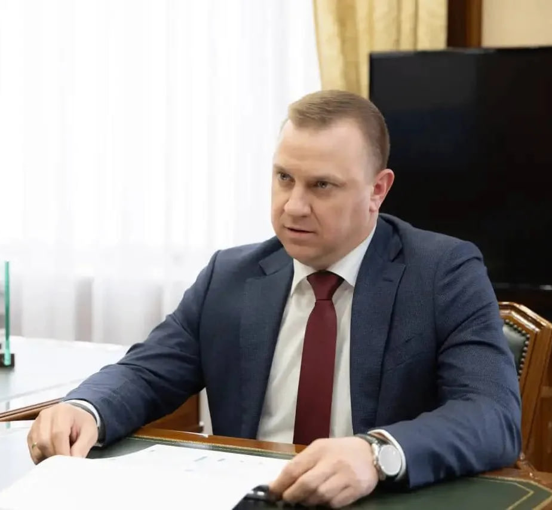
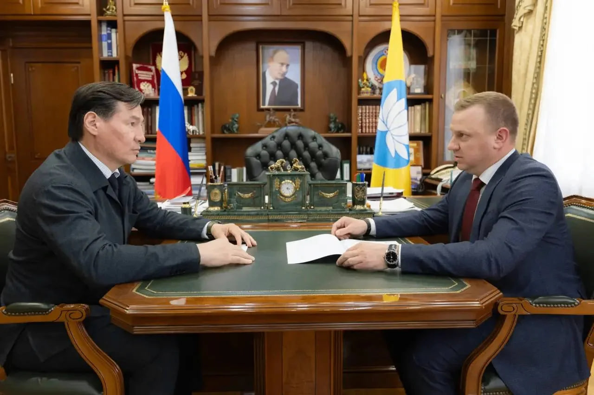

| ID Удостоверения: | ФС-125004 |
| Подразделение: | Отдел противодействия дропперству, Управление анализа и методологии |
| Специализация: | Выявление фиктивных кредитных заявок, противодействие дропперству, финансовый мониторинг, аналитика подозрительных транзакций |
Борьба с дропперством и фиктивными кредитными заявками. Евгений Алексеевич — один из немногих специалистов, прошедший путь с самых низов в сфере противодействия дропперству. Он досконально знает механизмы вовлечения граждан в преступные схемы, методы вербовки дропперов и способы вывода средств через подставных лиц. Его опыт позволяет эффективно выявлять фиктивные кредитные заявки и пресекать деятельность преступных групп на ранних стадиях.
Евгений Алексеевич начал свою карьеру в Росфинмониторинге с оперативной работы, погружаясь в детали механизмов дропперства — одного из самых опасных явлений в современной финансовой системе. Проработав на передовой, он изучил все уловки мошенников: от поиска «дропов» через соцсети и мессенджеры до использования их банковских карт для обналичивания похищенных средств.
Сегодня Евгений Алексеевич — признанный эксперт в своей области. Он разрабатывает методики раннего выявления подозрительных транзакций, координирует работу с кредитными организациями и участвует в межведомственных операциях по ликвидации дропперских сетей. Его знание «кухни» преступников позволяет эффективно блокировать схемы на этапе их зарождения.

* Ряд материалов и деталей профессиональной деятельности сотрудников ведомства не подлежит разглашению ввиду соблюдения регламентов строгой конфиденциальности и защиты данных субъектов финансового мониторинга.